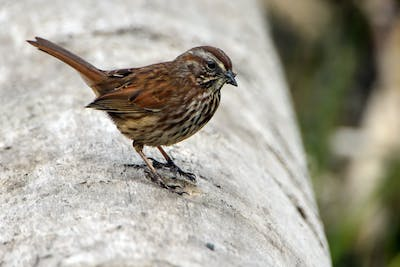

One's happiness sprouts from one's passion
You do not have to be particularly good at what you love.
Birds
Here's a picture of a bird if you didn't know what they looked like:

Daily interactions with birds are known to boost one's mental health. In other words, make someone happier.
Things to do to Pass Time
Warning. Only use it if you're bored.
- Make Oobleck
- Read a book
- Listen to music and pretend you're making a music video
- Reminisce/recreate your childhood with family, or by yourself is ok too
- Yell at a spider hiding in the corner of your room
- Talk to casper the ghost
- Experiment cooking eggs in the kitchen
- YOU SHOULD BOIL EGGS FOR ONLY 5-10 MINUTES TO GET THE PERFECT EGG AND IMEDENTLY DROP IT IN ICE WATER TO GET IT PERFECTLY OUT OF THE EGG SHELL
- Create art
- Make a mud cake
- Look at vines because they're better than memes
- Rewatch the longest movie or show you know until you can replay it in your head
- Find out bird facts to impress someone one day
- Realize you lost something and spend the next hour trying to find it
Animes to watch
Note: some will make you cry. Because I sure did, I'm not ok.
- Violet Evergarden
- Fairy Tail
- Handa-kun
- The Disastrous Life of Saiki
- Princess Tutu
- Black Clover
- World Trigger